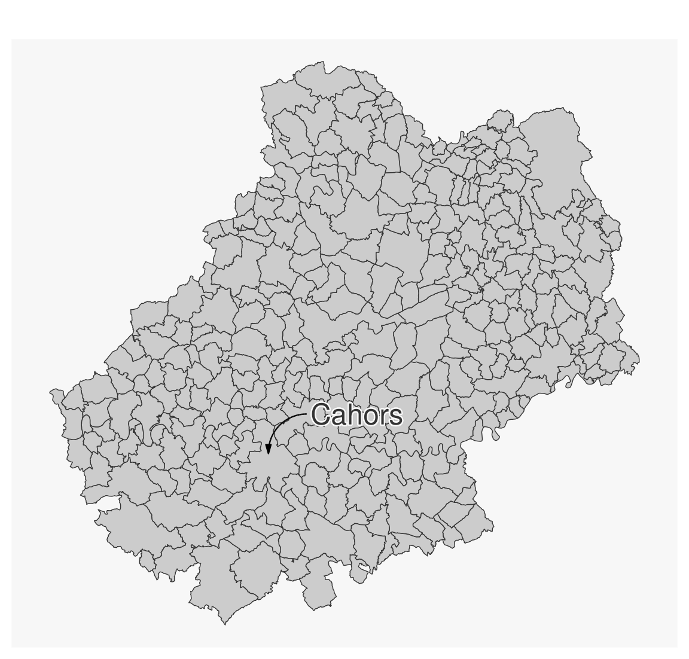
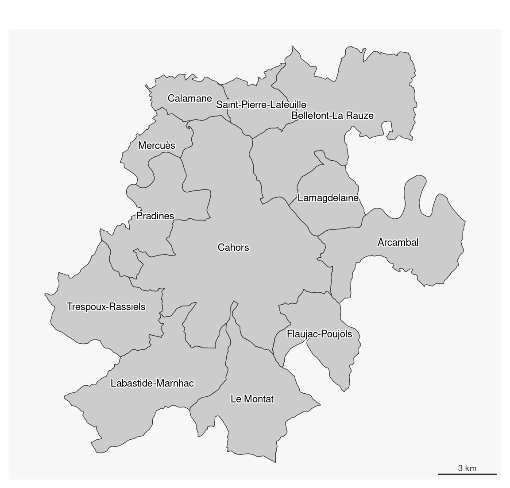
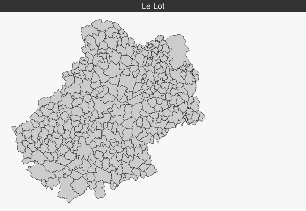

library(sf)
# import municipalities
com <- st_read("data/lot.gpkg", layer = "communes", quiet = TRUE)5 Map Layout
5.1 Sample data set
Import map layers from the geopackage file lot.gpkg.
5.2 Titles
mf_title() displays a title.
mf_map(com)
mf_title("Title of the map")
5.3 Flèche d’orientation et échelle
mf_arrow() displays a North arrow and mf_scale() displays a scale bar.
mf_map(com)
mf_scale(size = 20, lwd = 2, cex = 1.2)
mf_arrow()5.4 Credits
mf_credits() plots credits at the bottom of the map.
mf_map(com)
mf_credits("Auteurs : TG & HP\nSources : IGN, 2018")5.5 Full layout
mf_layout() add a complete layout to the map (title, credits, north arrow, scale bar). Each layout elements can also be set separately (with mf_title(), mf_credits(), mf_arrow() and mf_scale()).
mf_map(com)
mf_layout(
title = "Lot",
credits = "Auteurs : TG & HP\nSources : IGN, 2018",
arrow = TRUE,
scale = TRUE
)
5.6 Annotations
mf_annotation() displays an annotation on a spatial feature.
# select a municipality
cahors <- com[com$NOM_COM == "Cahors", ]
mf_map(com)
mf_annotation(
x = cahors,
txt = "Cahors",
halo = TRUE,
cex = 1.5
)
5.7 Labels
mf_label() is dedicated to the display of labels on a map. The overlap = FALSE argument displays non overlapping labels.
# Select municipalities intersecting Cahors
com_sel <- st_filter(com, com[com$NOM_COM == "Cahors", ])
mf_map(com_sel)
mf_label(
x = com_sel,
var = "NOM_COM",
col= "black",
halo = TRUE,
overlap = FALSE,
lines = FALSE
)
mf_scale()
5.8 Legends
mf_legend() displays legends.
mf_map(com)
mf_legend(
type = "prop",
val = c(1000,500,200,10),
inches = .4,
title = "Population",
pos = "topleft"
)
mf_legend(
type = "choro",
val = c(0,10,20,30,40),
pal = "Greens",
pos = "bottomright",
val_rnd = 0
)
5.9 Center the map on a specific area
The mf_map() function can start a map by centering it on a spatial object and choosing transparent background and borders.
mf_map(x = com_sel, col = NA, border = NA)
mf_map(com, add = TRUE)
mf_map(com_sel, col = NA, border = "red", lwd = 2, add = TRUE)5.10 Display several maps on the same figure
To plot several maps on the same figure, the user can use the mfrow argument of the par() function before plotting the maps. For example, use par(mfrow = c(1, 2)) (i.e. 1 row, 2 columns) to plot two maps side by side).
# define the figure layout (1 row, 2 columns)
opar <- par(mfrow = c(1, 2))
# define theme
mf_theme("default", mar = c(0,0,1.2,0), tab = FALSE, pos = "center")
# first map
mf_map(com)
mf_map(com, "TER_F", "prop",
inches = .2,
val_max = 4000,
leg_pos = "topleft",
leg_title = "N.")
mf_title("Tertiary: Women")
# second map
mf_map(com)
mf_map(com, "TER_H", "prop",
inches = .2,
val_max = 4000,
leg_pos = NA)
mf_title("Men")
par(opar)5.11 Export maps
mf_export() exports maps in PNG or SVG formats.
The exported map width/height ratio will match the one of a spatial object.
If width is specified, then height is deduced from the width/height ratio of x, figure margins and title size.
If height is specified, then width is deduced from the width/height ratio of x, figure margins and title size.
mf_export(
x = com,
filename = "img/com_default.png",
width = 600
)
mf_map(com, add = TRUE)
mf_title("Le Lot")
dev.off()In the following export we have added some space on the right side of the plot (50% of x width).
mf_export(
x = com,
filename = "img/com_expand.png",
width = 600,
expandBB = c(0, 0, 0, .5)
)
mf_map(com, add = TRUE)
mf_title("Le Lot")
dev.off()
5.12 Add an image on the map
readPNG() from the png package can be used to add an image on a map.
library(png)
# image import
logo <- readPNG("img/Logo CG 46 - Bleu.png")
# image dimension
pp <- dim(logo)[2:1] * 20
# Coordinates of the topleft corner of com bounding box
xy <- st_bbox(com)[c(1,4)]
mf_map(com, col = "#D1914D", border = "white")
rasterImage(
image = logo,
xleft = xy[1],
ybottom = xy[2] - pp[2],
xright = xy[1] + pp[1],
ytop = xy[2]
)
5.13 Interactive placement of layout elements
Some layout elements can be positioned interactively on the map by using “interactive” as position. This applies to legends, north arrow, scale bar.

5.14 Add a shadow to a layer
mf_shadow() plots the shadow of a polygon layer.
mf_shadow(com)
mf_map(com, add=TRUE)
Exercice
Import the communes layer for the Lot department from the geopackage lot.gpkg file.
Import the com.csv file.
This dataset covers the communes of the Lot department and contains several additional variables:- number of employees (ACT).
- number of people employed in industry (IND)
- Number of people employed in the total population (SACT)
- The share of industry workers in the total workforce (SACT_IND)
Attach dataset and municipality layer.
Create a map showing the active population working in industry.
Add the necessary wrapping elements.
Use a custom theme.
Add a Lot location card.
Export the map in PNG format, 800 pixels wide.
How can I make the map more intelligible? Get started!